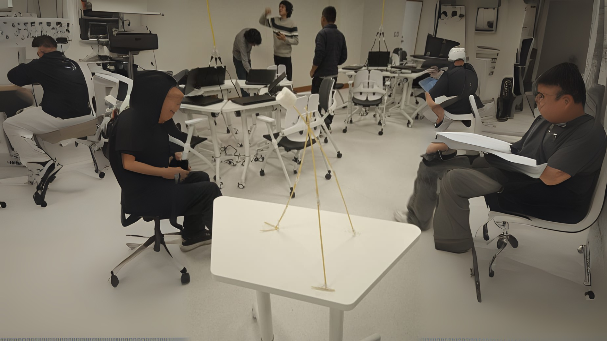

Proyectos y Dinámicas

Comentarios
“Gracias a las dinámicas en clase aprendí a trabajar en equipo de manera más organizada. Me gustó mucho cómo cada integrante aportó ideas para el proyecto.”
- Curso de Introducción a la Ingeniería Informática“Este curso me ayudó a reflexionar sobre mis fortalezas y debilidades, y a valorar la importancia de la autonomía en mi desarrollo personal y académico.”
- Curso de Desarrollo persona y autonomía“En este curso descubrí lo importante que es la comunicación constante con mis compañeros. Fue un reto, pero al final logramos completar la presentación con éxito.”
- Curso de Comunicación"La educación no es llenar un balde, sino encender un fuego." - William Butler Yeats